Pictures from various speakers and the job fair
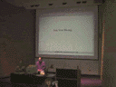
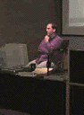
He also had some comments on the development of the software.
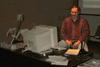
Chuck is a pretty easy guy to get along with.
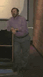
Prof. Dan Reed in his talk about parallel processor performance monitoring.
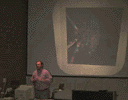
Here are some slides of the VR systems they use to track all that data.
Reed's research group is one of the first here at UIUC to use VR systems
for data analysis.
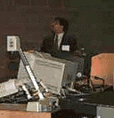
Prof. Rajesh Gupta enlightened us with some of the inside info on his current
research.
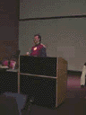
Mark Tebbe also gave an interesting presentation.
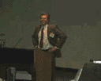
Ron Rice of BALR gave a talk on compter consulting and the work that is
done at his company and others.
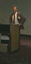
He also gave a lot of inside tips on how to present youself when looking for
a job.
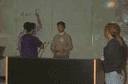
Mike Duff and Alex Bratton (here with Alan and Jill) are both ex-ACM chairs.
They work for Ron Rice at BALR, and were giving a talk on "What the Real
World is Like."
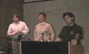
Here it looks like Alan is trying to give Mike and Alex some advice, and I
don't think Alex is buying it.
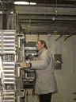
Charley Kline is one of the head networking people for UIUC. He was giving
tours of Node1, one of the five major distribution points for our campus
computer network.
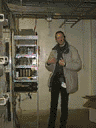
Node1 serves most of the engineering campus and also includes the phone
system for the northern half of campus. There were some pretty cool things to
look at.
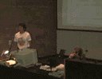
Jon Roma and Charlie Kline also gave a talk on "Big Iron Hardware" and
the good ol' days of computing. Jon was so excited he forgot he was
supposed to be nervious.
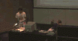
"We used punch cards... and we LIKED IT!" There were some great stories about
when CCSO owned the fastest machine in the world... a Control Data Cyber.
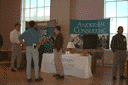
Athough we didn't have quite the number of students we expected, the
job fair went well for those who were looking.
Here Eric Johnson, another ex-ACM@UIUC member, talks to a student about
Factset, the firm he programs for.
We owe a lot to those companies that came... they helped pay for a lot of
the conference costs.

Last updated: 7/15/96 pbleisch@uiuc.edu
{kind=link}
{kind=link}
{kind=link}
{kind=link}
{kind=link}
{kind=link}
{kind=link}
{kind=link}
{kind=link}
{kind=link}
{kind=link}
{kind=link}
{kind=link}
{kind=link}
{kind=link}
{kind=link}
{kind=link}